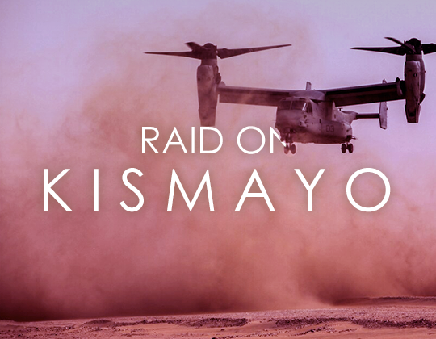

Original Concept By: Christopher Stoner
Date: May 13th 2013
Location: Kismayo, Somalia
Playable Side: United States
Duration: 5 Hours
Reliable intelligence has determined that an al-Qaeda courier is bringing information coordinating further terrorist actions in sub-Saharan Africa to the leadership council of the Somali al-Shabaab faction. The National Command Authority has committed elements of the Kearsarge Amphibious Ready Group to act on this information if it turns out to be credible. Kearsarge and a lone escort, the Littoral Combat Ship USS Independence, have steamed ahead of the rest of their group in order to conduct this covert mission off the coast of the southern Somali city of Kismayo.
Their mission: to acquire and observe the courier in the chance that he will lead them to any al-Shabaab leadership elements and if so, to launch a direct action effort to capture them.